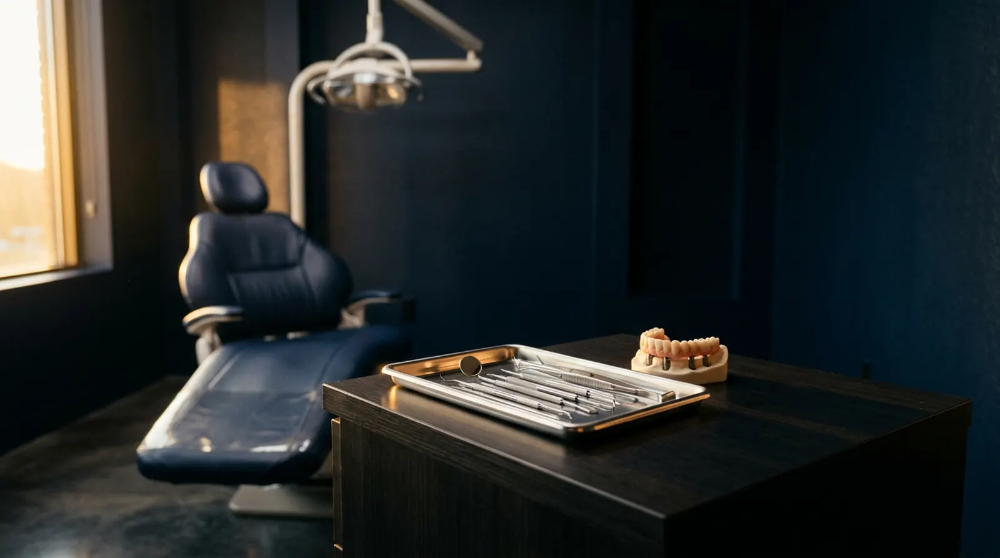
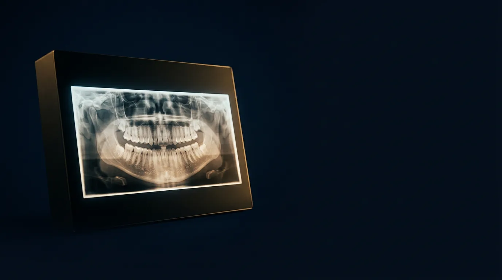

Fevereiro de 2027
Data prevista, sujeita a confirmação.

Atendimento mediante agendamento, com avaliação individual de cada caso.
Agendar avaliaçãoImagem ilustrativa.

Um novo espaço está sendo preparado em Uberlândia para oferecer uma experiência odontológica ainda mais completa. Enquanto isso, o atendimento continua mediante agendamento.
Data prevista, sujeita a confirmação.
As consultas seguem mediante agendamento. A equipe informa o local pelo WhatsApp.
Enquanto o novo espaço não fica pronto, a proposta é a mesma: um atendimento cuidadoso, organizado e acolhedor.
Espaço voltado ao atendimento odontológico, com cuidado em cada detalhe do que o paciente encontra.
Cada caso começa com conversa, avaliação e um planejamento alinhado ao que o paciente precisa.


O atendimento segue mediante contato prévio. Fale direto com a equipe pelo WhatsApp.
Agendar pelo WhatsAppSegunda a sexta, das 8h às 18h · Sábado, das 8h às 12h